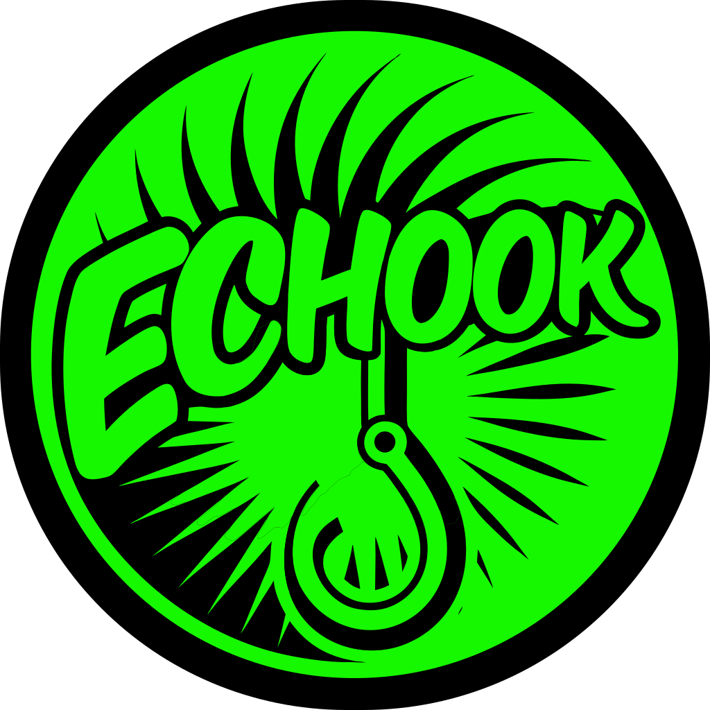
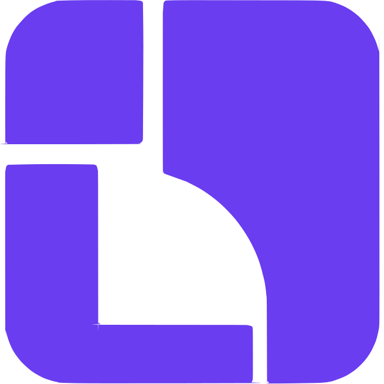
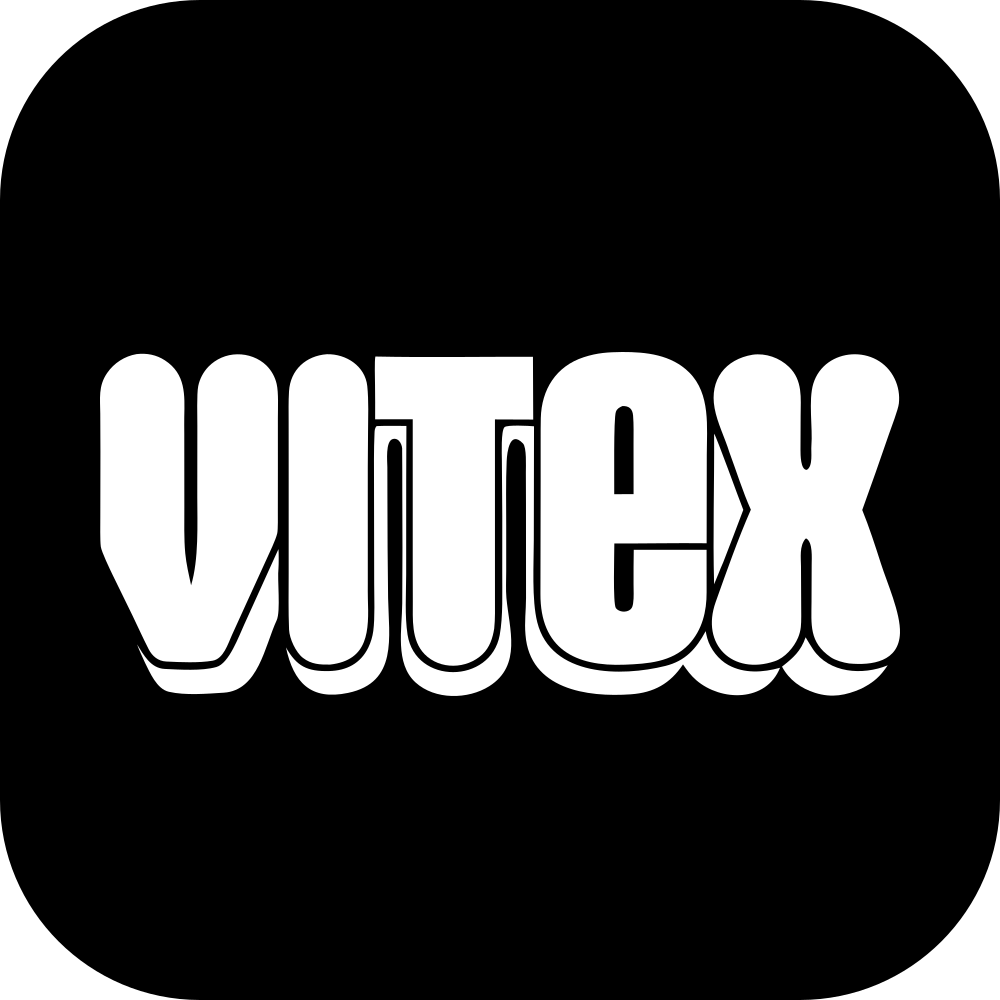
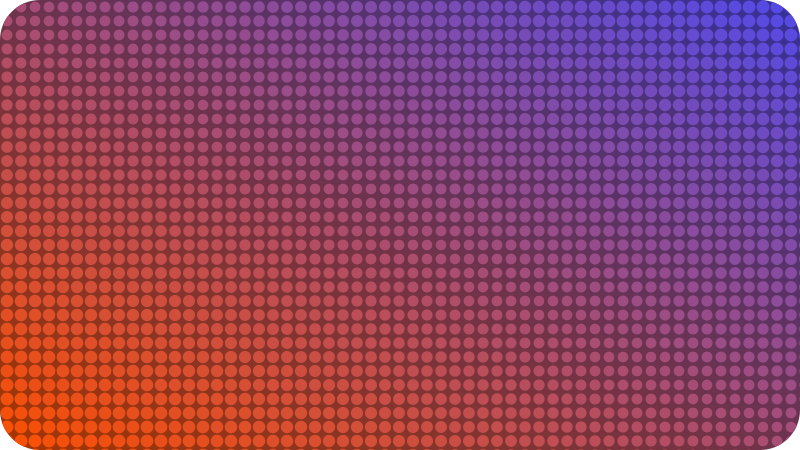

AI Agent Architect · Founding Engineer · AI Educator
Chan Meng
I architect AI agents, ship full-stack platforms end-to-end, and teach others to do the same.
480+ GitHub stars
12 companies
5 teaching cohorts
Anthropic Partner Network
Google News MCP

echook ArchLang
ArchCanvas
Vitex